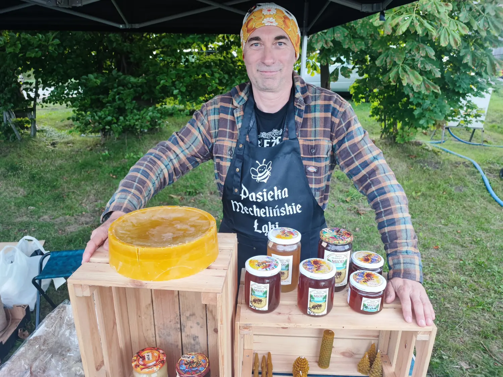
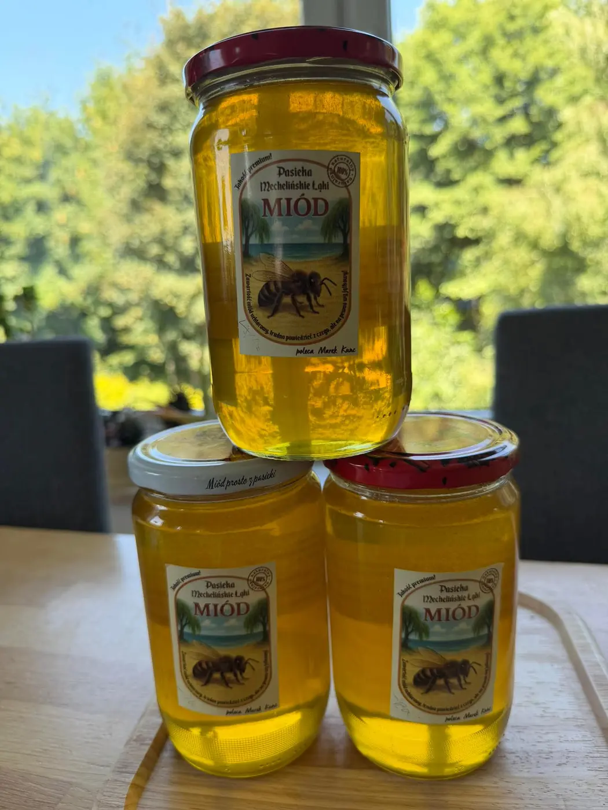
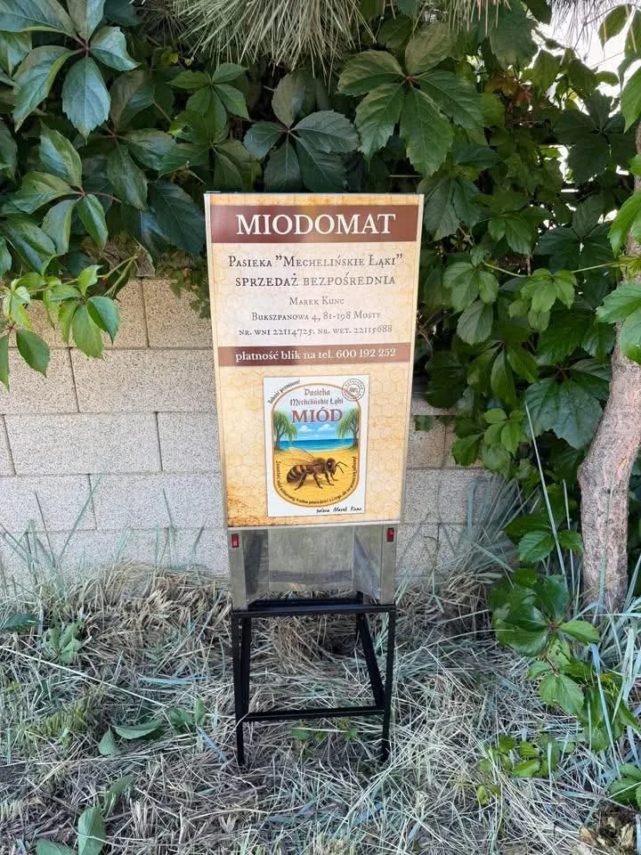
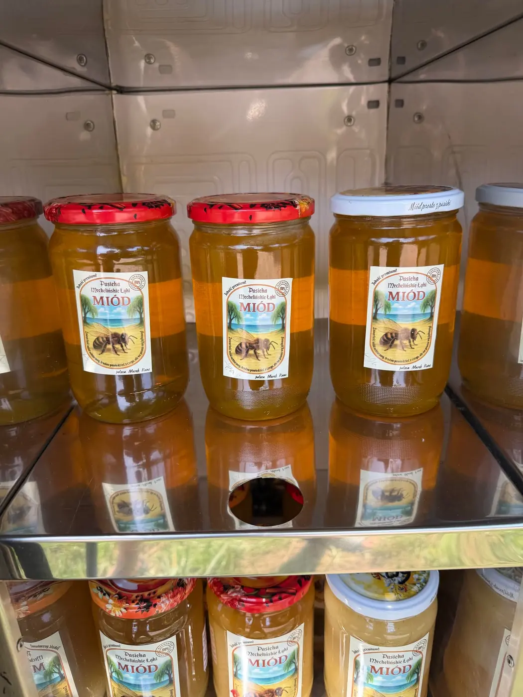
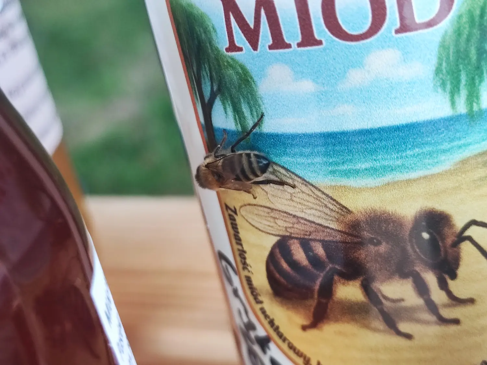

Miód z łąknad samą zatoką
Pasieka stoi tam, gdzie Pradolina Kaszubska kończy się plażą — przy rezerwacie Mechelińskie Łąki nad Zatoką Pucką. Pszczoły zbierają nektar ze słonawych łąk, trzcinowisk i przydomowych ogrodów. Stąd ten smak.
poleca Marek Kunc

Co znajdziesz w pasiece
Miód w kilku odmianach, wosk z własnej przetopki i świece robione ręcznie. Wszystko z jednej pasieki, wszystko podpisane nazwiskiem.

Miody
Od jasnego rzepakowego po ciemną grykę. Odmiany zmieniają się w rytm kwitnienia.
Zobacz odmiany
Miodomat
Automat z miodem przy Bukszpanowej 4 w Mostach. Bierzesz słoik, płacisz BLIK-iem.
Jak to działa
Wosk i świece
Szyszki, świece rolowane z węzy i wosk w bloku dla rękodzielników.
Zobacz wyrobyMiód dostępny bez umawiania się
Przy posesji stoi miodomat — automat z chłodzoną szufladą, w którym zawsze czeka kilka słoików. Nie trzeba dzwonić ani czekać, aż wrócę z pasieki.
- AdresBukszpanowa 4, 81-198 Mosty
- PłatnośćBLIK na numer 600 192 252
- PytaniaZadzwoń — chętnie doradzę odmianę


Pasieka nad Zatoką Pucką
Rezerwat Mechelińskie Łąki to 113 hektarów słonawych łąk, szuwarów i muraw na piasku, tuż przy brzegu zatoki. Rośnie tam roślinność, której nie znajdziesz w głębi kraju.
Moje ule stoją w sąsiedztwie tych łąk, między ogrodami a pasem nadmorskim. Dlatego nawet wielokwiat z jednego roku nie smakuje dokładnie tak samo jak z poprzedniego.
Chcesz konkretną odmianę?
Zadzwoń przed przyjazdem — powiem, co akurat jest w słoikach i odłożę, jeśli trzeba.